MERCREDI 18 NOVEMBRE 2026
Vocabulaire, expressions et grammaireTomber, porter, accueillir · bien · il faudrait que · qui, que, dont, où · l'art en résonanceTomber, porter, accueillir · bien · il faudrait que · relative pronouns · art in resonance
Le Mont-Saint-Michel, Normandie
Bonjour ! Dans cette leçon, on passe d'une consultation médicale à une salle de musée, en compagnie de quelques chiens très sympathiques.
Hello! In this lesson we go from a medical appointment to a museum gallery, in the company of a few very friendly dogs.
Touche une carte pour la retourner, le haut-parleur 🔊 pour écouter et EN pour la traduction. Essaie d'abord sans !
Tap a card to flip it, the speaker 🔊 to listen and EN for the translation. Try without it first!
Tout est sauvegardé automatiquement dans le document : tes réponses, ton score et tes textes. Tu peux fermer la page et la rouvrir plus tard, tu retrouveras tout.
Everything is saved automatically in the document: your answers, your score and your texts. You can close the page and open it again later, everything will still be there.
1
Vocabulaire et expressions
Vocabulary and expressions
A
Le corps, la santé, le quotidien
The body, health, everyday life
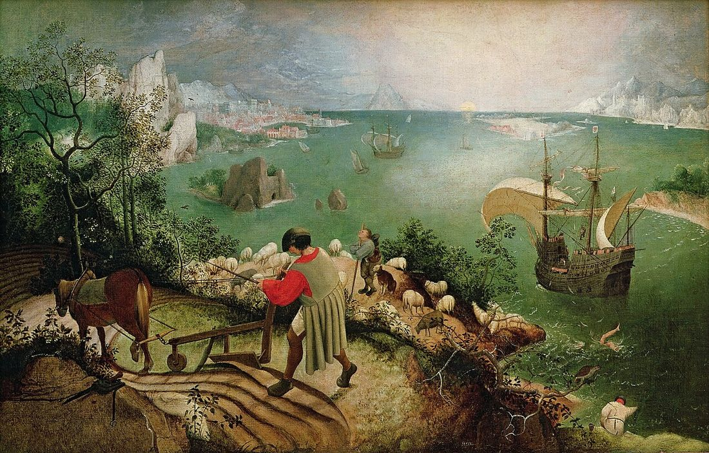
tomber
verbe intransitif · auxiliaire être
Pieter Bruegel l'Ancien (attribué à), Paysage avec la chute d'Icare, vers 1560 · Musées royaux des Beaux-Arts, Bruxelles
↻ toucher pour retourner · toccare per girare
tomber to fall
Tomber n'est jamais pronominal : je tombe, tu tombes, il tombe… Au passé composé, on utilise être : je suis tombée.
Tomber is never reflexive: je tombe, tu tombes, il tombe… In the passé composé it takes être: je suis tombée.
Chez Bruegel, Icare tombe dans la mer, et personne ne le remarque.
In Bruegel's painting, Icarus falls into the sea, and nobody notices.
Elle est tombée dans l'escalier et s'est cassé la cheville.
She fell down the stairs and broke her ankle.
Pour un objet qu'on lâche : faire tomber. J'ai fait tomber mon téléphone.
For an object you drop: faire tomber. I dropped my phone.
↻
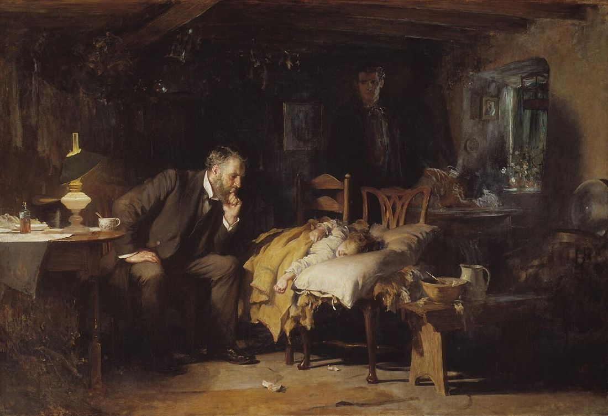
la consultation médicale
nom féminin
Luke Fildes, Le Docteur, 1891 · Tate Britain, Londres
↻ toucher pour retourner · toccare per girare
la consultation médicale a medical appointment, a consultation
On prend rendez-vous chez le médecin, on va en consultation, et le médecin rédige une ordonnance.
You make an appointment with the doctor, you go to the consultation, and the doctor writes a prescription.
La consultation a duré vingt minutes et le médecin m'a prescrit du repos.
The appointment lasted twenty minutes and the doctor prescribed rest.
Elle a consulté un spécialiste pour son genou.
She saw a specialist about her knee.
Le tableau de Luke Fildes montre un médecin au chevet d'une enfant : une consultation à domicile, au XIXe siècle.
Luke Fildes's painting shows a doctor at a child's bedside: a home visit in the nineteenth century.
↻
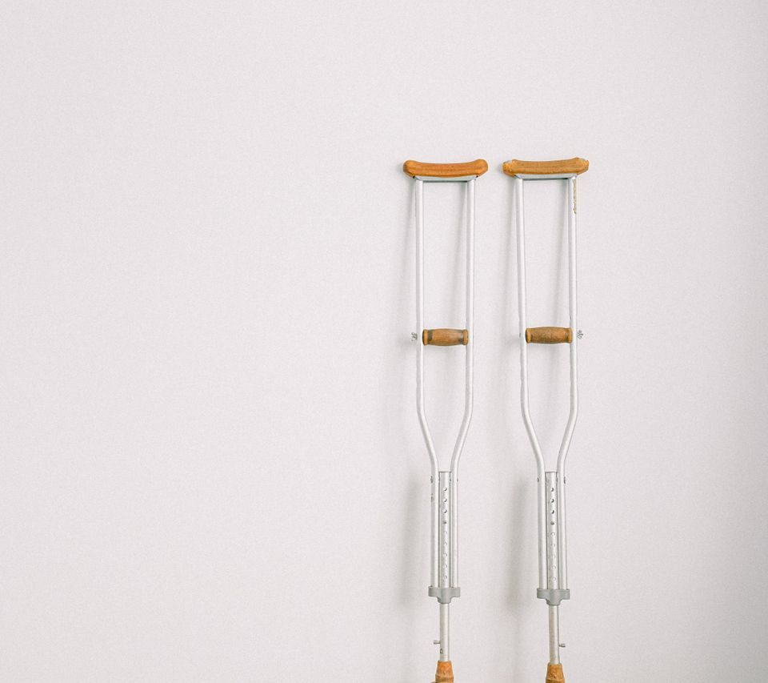
une béquille, des béquilles
nom féminin
Une paire de béquilles contre un mur blanc
↻ toucher pour retourner · toccare per girare
une béquille, des béquilles a crutch, crutches
Après son entorse, elle a marché avec des béquilles pendant trois semaines.
After her sprain, she walked on crutches for three weeks.
Il se déplace avec des béquilles, mais il refuse qu'on l'aide.
He gets around on crutches, but he won't let anyone help him.
La béquille d'une moto ou d'un vélo, c'est aussi le petit pied qui la tient debout. Au figuré, une béquille est un soutien dont on dépend trop.
The béquille of a motorbike or a bicycle is also the kickstand. Figuratively, a béquille is a support you depend on too much.
↻
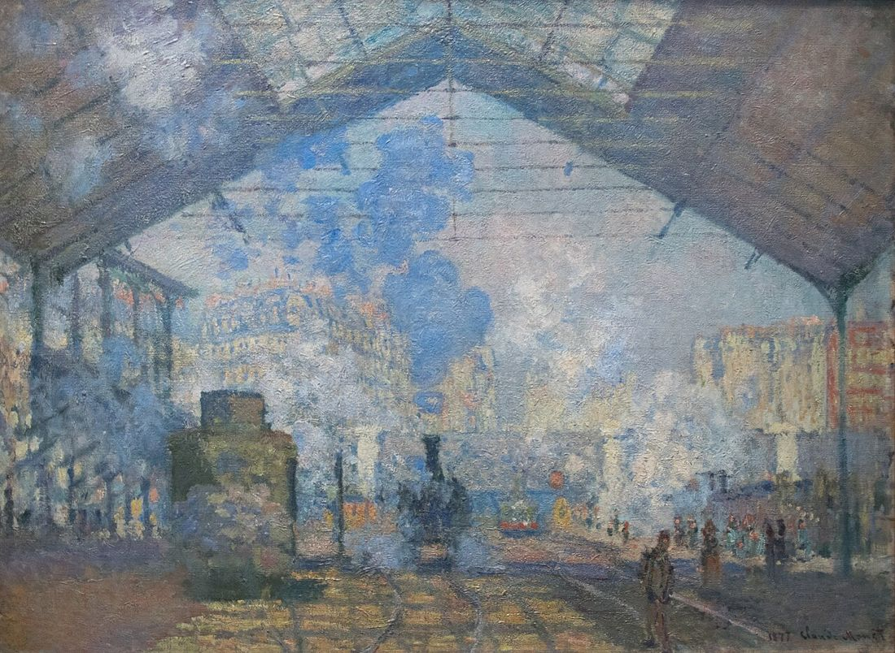
être à l'arrêt · être en arrêt maladie
locutions verbales
Claude Monet, La Gare Saint-Lazare, 1877 · Musée d'Orsay, Paris
↻ toucher pour retourner · toccare per girare
être à l'arrêt · être en arrêt maladie to be at a standstill · to be on sick leave
Être à l'arrêt : ne plus bouger, ne plus avancer (un train, un chantier, un projet). Pour le travail, on dit être en arrêt maladie, ou familièrement être en arrêt.
Être à l'arrêt: to be stationary, not moving forward (a train, a building site, a project). For work, you say être en arrêt maladie, or informally être en arrêt.
Le train est resté à l'arrêt pendant une heure en pleine campagne.
The train stood still for an hour in the middle of the countryside.
Depuis sa chute, elle est en arrêt maladie pour deux semaines.
Since her fall, she has been on sick leave for two weeks.
Le médecin délivre un arrêt de travail. Le chantier est à l'arrêt faute de financement.
The doctor issues a sick note. The building site is at a standstill for lack of funding.
↻
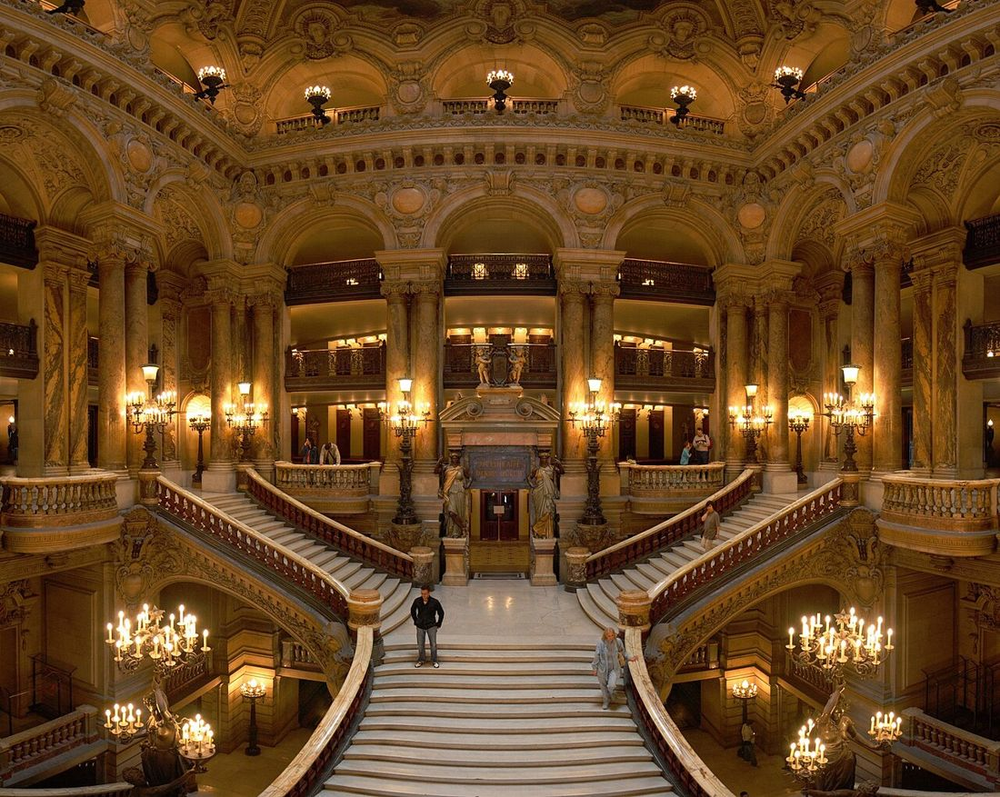
un escalier · une échelle · un escabeau
noms
Le grand escalier de l'Opéra Garnier, Paris
↻ toucher pour retourner · toccare per girare
un escalier · une échelle · un escabeau a staircase · a ladder · a stepladder
L'escalier fait partie du bâtiment. L'échelle est mobile et s'appuie contre un mur. L'escabeau tient debout tout seul, avec quelques marches.
The staircase is part of the building. The ladder is movable and leans against a wall. The stepladder stands on its own, with a few steps.
Le grand escalier de l'Opéra Garnier est une œuvre d'art en soi.
The grand staircase of the Opéra Garnier is a work of art in itself.
Monte sur l'escabeau pour accrocher le tableau, l'échelle est trop haute.
Climb onto the stepladder to hang the painting, the ladder is too tall.
On dit monter l'escalier ou monter les escaliers. Un escalier en colimaçon : a spiral staircase.
You can say monter l'escalier or monter les escaliers. Un escalier en colimaçon: a spiral staircase.
↻

porter un pantalon, une jupe, une robe
verbe transitif
Gustave Caillebotte, Rue de Paris, temps de pluie, 1877 · Art Institute of Chicago
↻ toucher pour retourner · toccare per girare
porter un pantalon, une jupe, une robe to wear trousers, a skirt, a dress
Porter décrit un état : ce qu'on a sur soi. Mettre décrit l'action de s'habiller. Attention : un pantalon est au singulier !
Porter describes a state: what you have on. Mettre describes the action of getting dressed. Careful: un pantalon is singular!
Chez Caillebotte, la femme porte une robe sombre et un chapeau orné d'une voilette.
In Caillebotte's painting, the woman is wearing a dark dress and a hat with a little veil.
Ce matin, j'ai mis une jupe, mais d'habitude je porte un pantalon.
This morning I put on a skirt, but I usually wear trousers.
On porte aussi des lunettes, la barbe, un parfum, un nom. Au figuré : porter ses fruits = donner de bons résultats.
You also porter glasses, a beard, a perfume, a name. Figuratively: porter ses fruits = to bear fruit.
↻
B
Du côté des chiens
On the dogs' side
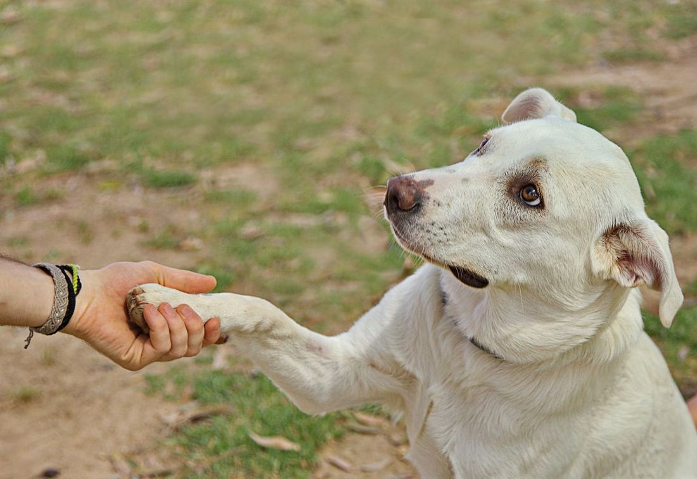
obéissant, obéissante
adjectif
Un chien sans pedigree, mais très obéissant
↻ toucher pour retourner · toccare per girare
obéissant, obéissante obedient
Le verbe est obéir à quelqu'un ou à quelque chose : on lui obéit, on y obéit. Le contraire : désobéissant, désobéir.
The verb is obéir à someone or something: on lui obéit, on y obéit. The opposite: désobéissant, désobéir.
Ce chien n'a pas de pedigree, mais il est très obéissant : il donne la patte dès qu'on le lui demande.
This dog has no pedigree, but he is very obedient: he gives his paw as soon as you ask.
Ma chienne obéit à la voix, mais pas toujours au sifflet !
My dog obeys voice commands, but not always the whistle!
↻
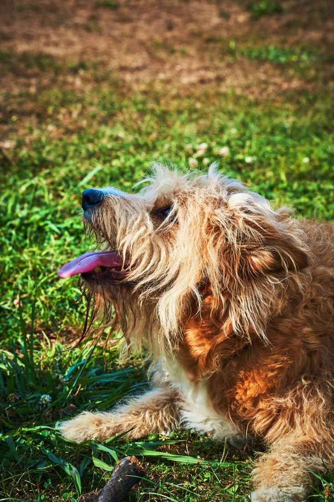
avoir du temps · avoir le temps de
locutions verbales
Prendre son temps au soleil
↻ toucher pour retourner · toccare per girare
avoir du temps · avoir le temps de to have (some) time · to have time to
Avoir du temps : disposer de temps en général. Avoir le temps de + infinitif : pour une action précise. À la négative : je n'ai pas de temps, je n'ai pas le temps de…
Avoir du temps: to have time in general. Avoir le temps de + infinitive: for a specific action. In the negative: je n'ai pas de temps, je n'ai pas le temps de…
Depuis que je travaille à mi-temps, j'ai du temps pour promener le chien dans les collines.
Since I started working part-time, I have time to walk the dog in the hills.
Tu as le temps de passer au musée avant la fermeture ?
Do you have time to stop by the museum before it closes?
Prendre son temps = ne pas se presser. Il est temps de partir, il est temps que + subjonctif.
Prendre son temps = to take your time. Il est temps de partir, il est temps que + subjunctive.
↻
accueillir
verbe du 3e groupe
Le château de Chambord, Loir-et-Cher
↻ toucher pour retourner · toccare per girare
accueillir to welcome, to take in, to host
Au présent, accueillir se conjugue comme un verbe en -er : j'accueille, tu accueilles, il accueille. Attention à l'orthographe : ueil, et non « euil », après le c.
In the present tense, accueillir is conjugated like an -er verb: j'accueille, tu accueilles, il accueille. Watch the spelling: ueil, not euil, after the c.
Le refuge accueille des chiens abandonnés, de toutes tailles et de toutes origines.
The shelter takes in abandoned dogs of all sizes and backgrounds.
Chaque année, le château de Chambord accueille un très grand nombre de visiteurs.
Every year, the Château de Chambord welcomes a huge number of visitors.
La règle complète est dans la partie grammaire.
The full rule is in the grammar section.
↻
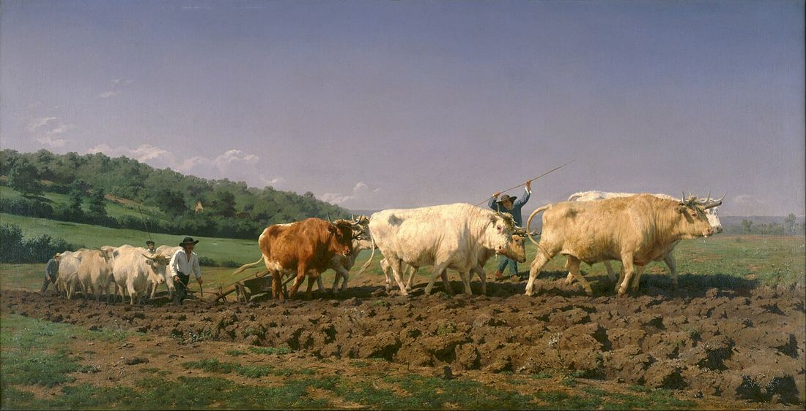
en même temps · au même moment
locutions adverbiales
Rosa Bonheur, Labourage nivernais, 1849 · Musée d'Orsay, Paris
↻ toucher pour retourner · toccare per girare
en même temps · au même moment at the same time · at the same moment
Au même moment : simultanéité stricte. En même temps : simultanéité, mais aussi nuance ou concession à l'oral, comme « mind you ». À la fois : deux qualités ensemble.
Au même moment: strict simultaneity. En même temps: simultaneity, but also a nuance or concession in speech, like 'mind you'. À la fois: two qualities together.
Les deux bœufs avancent en même temps, au même rythme lent.
The two oxen move forward at the same time, at the same slow pace.
Le chien a aboyé et, au même moment, la sonnette a retenti.
The dog barked and, at that very moment, the doorbell rang.
Il est un peu sauvage. En même temps, il a passé deux ans au refuge !
He's a bit shy. Mind you, he spent two years at the shelter!
Rosa Bonheur, grande peintre animalière, a peint ce labourage en 1849. Elle vivait entourée d'animaux.
Rosa Bonheur, a great animal painter, painted this ploughing scene in 1849. She lived surrounded by animals.
↻
C
Parler de l'art
Talking about art
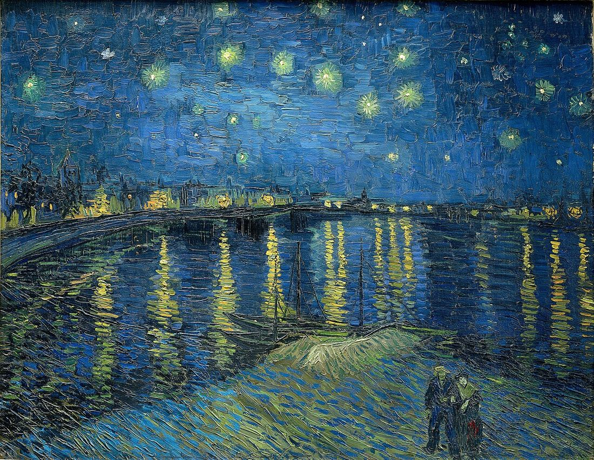
la résonance
nom féminin
Vincent van Gogh, La Nuit étoilée sur le Rhône, 1888 · Musée d'Orsay, Paris
↻ toucher pour retourner · toccare per girare
la résonance resonance
La résonance littéraire désigne la capacité d'une œuvre à créer un écho profond, émotionnel et intellectuel, chez celui qui la lit ou la regarde.
Literary resonance is a work's ability to create a deep emotional and intellectual echo in the person who reads or looks at it.
Ce poème a une résonance particulière pour moi : il me rappelle mon enfance.
This poem has a special resonance for me: it reminds me of my childhood.
Les nuits de Van Gogh trouvent un écho chez des millions de visiteurs.
Van Gogh's night scenes strike a chord with millions of visitors.
Résonner s'écrit avec deux n, comme résonance. À ne pas confondre avec raisonner, réfléchir.
Résonner is spelt with two n's, like résonance. Not to be confused with raisonner, to reason.
↻
le dialogue des arts · mettre en résonance
nom masculin · locution verbale
Une fresque à Montréal : la sculpture antique rencontre l'art urbain
↻ toucher pour retourner · toccare per girare
le dialogue des arts · mettre en résonance the dialogue between the arts · to bring into resonance
La littérature est souvent mise en résonance avec la peinture, le cinéma ou la musique : chaque art éclaire l'autre.
Literature is often brought into resonance with painting, cinema or music: each art sheds light on the other.
Cette fresque met en résonance la sculpture antique et l'art urbain.
This mural brings ancient sculpture and street art into dialogue.
L'exposition propose un dialogue entre les romans de Zola et les tableaux de Manet.
The exhibition offers a dialogue between Zola's novels and Manet's paintings.
↻
recontextualiser une œuvre
verbe du 1er groupe
Eugène Delacroix, La Liberté guidant le peuple, 1830 · Musée du Louvre, Paris
↻ toucher pour retourner · toccare per girare
recontextualiser une œuvre to recontextualise a work
Recontextualiser, c'est replacer une œuvre dans le moment où elle a été créée : l'époque, l'histoire, la vie de l'artiste.
To recontextualise is to put a work back into the moment it was created: the period, history, the artist's life.
Pour comprendre ce tableau, il faut le recontextualiser : Delacroix l'a peint après la révolution de juillet 1830.
To understand this painting, you have to put it back in context: Delacroix painted it after the July Revolution of 1830.
Au moment où l'œuvre a été créée, elle a choqué une partie du public.
When the work was created, it shocked part of the public.
Le contraire : décontextualiser une citation, la sortir de son contexte.
The opposite: décontextualiser a quotation, to take it out of context.
↻
2
Grammaire
Grammar
Tomber, faire tomber, laisser tomber
Tomber, faire tomber, laisser tomber
Tomber est intransitif : il n'a jamais de complément d'objet et se conjugue avec être. Pour dire qu'on lâche un objet, on utilise faire tomber, avec avoir.
Tomber is intransitive: it never takes a direct object and is conjugated with être. To say you drop something, use faire tomber, with avoir.
| tomber | The vase fell. | |
| faire tomber | I dropped the vase. | |
| laisser tomber | She gave up the piano. | |
| tomber sur | I bumped into a friend at the museum. | |
| tomber bien, mal | Your visit comes at the right time! | |
| tomber malade, amoureux | He fell in love with Paris. |
Le chien est tombé malade : il est resté à l'arrêt deux jours, puis il a retrouvé son énergie.
The dog fell ill: he stayed still for two days, then got his energy back.
La place et les sens de bien
The position and meanings of bien
1 · La place
1 · Position
| temps simple | After the verb in simple tenses. | |
| temps composé | Between the auxiliary and the past participle. | |
| infinitif | Before the infinitive. | |
| infinitif passé | Between avoir/être and the participle. |
Les adverbes courts suivent la même règle : mal, beaucoup, trop, assez, déjà, toujours, encore, vraiment. J'ai déjà vu ce film. Il faut trop attendre.
Short adverbs follow the same rule: mal, beaucoup, trop, assez, déjà, toujours, encore, vraiment. I have already seen this film. You have to wait too long.
2 · Les sens
2 · Meanings
| intensité | She is really tired. | |
| confirmation | Is that really him in the photo? | |
| concession | I did try, but the door was locked. | |
| accord | I'd love a coffee. (I'm happy to.) | |
| quantité | Many artists have painted the Seine. | |
| nuance affective | I like Paul. ≠ I love Paul. |
Avec aimer, bien atténue : j'aime bien = I like ; j'aime = I love (pour une personne). Mais j'aime beaucoup est plus fort que j'aime bien.
With aimer, bien softens: j'aime bien = I like; j'aime = I love (for a person). But j'aime beaucoup is stronger than j'aime bien.
Il faut que, il faudrait que + subjonctif
Il faut que, il faudrait que + subjunctive
Il faut que exprime une obligation ; il faudrait que, au conditionnel, adoucit : c'est un conseil, une suggestion, un souhait. Les deux sont suivis du subjonctif.
Il faut que expresses an obligation; il faudrait que, in the conditional, softens it: advice, a suggestion, a wish. Both are followed by the subjunctive.
Il faudrait que tu prennes rendez-vous chez le médecin.
You ought to make an appointment with the doctor.
Il faudrait que nous allions voir l'exposition avant qu'elle ferme.
We should go and see the exhibition before it closes.
Le temps du subjonctif
Which subjunctive tense
| action simultanée ou future | He ought to be on time. | |
| action accomplie | He ought to have finished before noon. | |
| regret, le passé | She should have seen a doctor sooner. |
Sans sujet précis, on utilise l'infinitif : il faudrait partir. Avec un sujet : il faudrait que tu partes. Dans la langue littéraire, on rencontre l'imparfait du subjonctif : il faudrait qu'il vînt.
With no specific subject, use the infinitive: il faudrait partir. With a subject: il faudrait que tu partes. In literary French you may meet the imperfect subjunctive: il faudrait qu'il vînt.
Accueillir, cueillir, recueillir : la conjugaison
Accueillir, cueillir, recueillir: conjugation
Ces verbes en -ir se conjuguent au présent, à l'imparfait, au futur et au subjonctif comme des verbes en -er. Le participe passé se termine en -i.
These -ir verbs are conjugated in the present, imperfect, future and subjunctive like -er verbs. The past participle ends in -i.
présentpresent
futurfuture
subjonctifsubjunctive
| passé composé | I welcomed | |
| imparfait | I used to welcome | |
| impératif | welcome! |
Orthographe : après c et g, on écrit ueil pour garder le son dur : accueil, cercueil, orgueil. Ailleurs, on écrit euil : fauteuil, écureuil, feuille.
Spelling: after c and g, write ueil to keep the hard sound: accueil, cercueil, orgueil. Elsewhere write euil: fauteuil, écureuil, feuille.
Rappel : les pronoms relatifs qui, que, dont, où
Reminder: the relative pronouns qui, que, dont, où
Qui, que, dont, où : la fonction
Qui, que, dont, où: their function
Le pronom relatif dépend de la fonction du mot qu'il remplace dans la proposition relative.
The relative pronoun depends on the function of the word it replaces in the relative clause.
| qui · sujet | The dog who is sleeping on the sofa is called Pablo. | |
| que · COD | The painting (that) I like best is at the Musée d'Orsay. | |
| dont · complément introduit par de | The book I told you about has just come out. | |
| où · lieu ou temps | The town where she was born. The day I adopted him. |
Pour le temps, on n'utilise jamais « quand » après un nom : le jour où, l'année où, au moment où.
For time, never use quand after a noun: le jour où, l'année où, au moment où.
Dont : les emplois avancés
Dont: advanced uses
Dont remplace un complément introduit par de : complément d'un verbe, d'un adjectif ou d'un nom.
Dont replaces a complement introduced by de: the complement of a verb, an adjective or a noun.
| verbe + de | The work people are talking about | |
| adjectif + de | The shelter she is so proud of | |
| nom + de | A painter whose canvases are famous | |
| ce dont | What I need is time. |
Avec une préposition composée (à côté de, au cours de, près de…), dont est impossible : on utilise duquel, de laquelle, desquels, desquelles. Le parc près duquel j'habite.
With a compound preposition (à côté de, au cours de, près de…), dont is impossible: use duquel, de laquelle, desquels, desquelles. The park near which I live.
Après une préposition : lequel et qui
After a preposition: lequel and qui
Après une préposition, on utilise qui pour une personne et lequel (laquelle, lesquels, lesquelles) pour une chose. Avec à : auquel, à laquelle, auxquels.
After a preposition, use qui for a person and lequel (laquelle, lesquels, lesquelles) for a thing. With à: auquel, à laquelle, auxquels.
L'amie avec qui je suis allée au musée adore Rodin.
The friend I went to the museum with loves Rodin.
C'est une question à laquelle je réfléchis depuis longtemps.
It's a question I've been thinking about for a long time.
La consultation au cours de laquelle le médecin m'a rassurée a duré dix minutes.
The appointment during which the doctor reassured me lasted ten minutes.
Registre soutenu : après que, on peut inverser le sujet. Le tableau que peignit Manet en 1863 fit scandale.
Formal style: after que, the subject can be inverted. The painting that Manet painted in 1863 caused a scandal.
3
Exercices
Exercises
1
EXERCICE · VOCABULAIRE
Choisis le mot ou l'expression qui convient.
Choose the right word or phrase.
1
Pour changer l'ampoule du plafond, j'ai besoin d'un ______ : il tient debout tout seul.
To change the ceiling bulb, I need a stepladder: it stands up on its own.
Pour changer l'ampoule du plafond, j'ai besoin d'un escabeau : il tient debout tout seul.
To change the ceiling bulb, I need a stepladder: it stands up on its own.
2
Le couvreur a appuyé son ______ contre la façade pour monter sur le toit.
The roofer leaned his ladder against the front of the house to climb onto the roof.
Le couvreur a appuyé son échelle contre la façade pour monter sur le toit.
The roofer leaned his ladder against the front of the house to climb onto the roof.
3
Elle s'est cassé la cheville : elle marche avec des ______ .
She broke her ankle: she is walking on crutches.
Elle s'est cassé la cheville : elle marche avec des béquilles .
She broke her ankle: she is walking on crutches.
4
Sur le portrait, elle ______ la robe bleue qu'elle avait achetée à Séville.
In the portrait, she is wearing the blue dress she had bought in Seville.
Sur le portrait, elle porte la robe bleue qu'elle avait achetée à Séville.
In the portrait, she is wearing the blue dress she had bought in Seville.
5
Les travaux du musée sont ______ depuis deux mois.
The museum works have been at a standstill for two months.
Les travaux du musée sont à l'arrêt depuis deux mois.
The museum works have been at a standstill for two months.
6
Ce chien n'a aucun pedigree, mais il est très ______ : il revient dès qu'on l'appelle.
This dog has no pedigree, but he is very obedient: he comes back as soon as you call him.
Ce chien n'a aucun pedigree, mais il est très obéissant : il revient dès qu'on l'appelle.
This dog has no pedigree, but he is very obedient: he comes back as soon as you call him.
7
Le refuge ______ chaque année plus de deux cents chiens.
Every year the shelter takes in over two hundred dogs.
Le refuge accueille chaque année plus de deux cents chiens.
Every year the shelter takes in over two hundred dogs.
8
Ce roman a une forte ______ chez les lecteurs d'aujourd'hui.
This novel strongly resonates with today's readers.
Ce roman a une forte résonance chez les lecteurs d'aujourd'hui.
This novel strongly resonates with today's readers.
9
Pour comprendre la colère du tableau, il faut le ______ : il a été peint en 1830.
To understand the anger in the painting, you have to put it back in context: it was painted in 1830.
Pour comprendre la colère du tableau, il faut le recontextualiser : il a été peint en 1830.
To understand the anger in the painting, you have to put it back in context: it was painted in 1830.
10
Il n'est pas très sociable. ______, il a vécu deux ans seul dans la rue.
He isn't very sociable. Mind you, he lived alone on the street for two years.
Il n'est pas très sociable. En même temps, il a vécu deux ans seul dans la rue.
He isn't very sociable. Mind you, he lived alone on the street for two years.
11
Je n'ai pas ______ temps de passer à la pharmacie avant la fermeture.
I don't have time to go to the chemist's before it closes.
Je n'ai pas le temps de passer à la pharmacie avant la fermeture.
I don't have time to go to the chemist's before it closes.
2
EXERCICE · TOMBER OU FAIRE TOMBER ?
Conjugue au passé composé avec tomber, faire tomber ou laisser tomber.
Use the passé composé of tomber, faire tomber or laisser tomber.
elle · tomber
1
Hier, ma voisine ______ dans l'escalier de l'immeuble.
Yesterday my neighbour fell down the stairs in the building.
Hier, ma voisine est tombée dans l'escalier de l'immeuble.
Yesterday my neighbour fell down the stairs in the building.
je · faire tomber
2
Le chien a sauté et j'______ mon café sur le tapis !
The dog jumped and I dropped my coffee on the rug!
Le chien a sauté et j'ai fait tomber mon café sur le tapis !
The dog jumped and I dropped my coffee on the rug!
nous · tomber sur
3
Nous ______ sur une exposition magnifique, par hasard.
We came across a magnificent exhibition, by chance.
Nous sommes tombés sur une exposition magnifique, par hasard.
We came across a magnificent exhibition, by chance.
elle · laisser tomber
4
Elle ______ ses cours de dessin : elle n'avait plus de temps.
She gave up her drawing classes: she no longer had any time.
Elle a laissé tomber ses cours de dessin : elle n'avait plus de temps.
She gave up her drawing classes: she no longer had any time.
les feuilles · tomber
5
Les feuilles ______ en une seule nuit.
The leaves fell in a single night.
Les feuilles sont tombées en une seule nuit.
The leaves fell in a single night.
il · tomber malade
6
Il ______ malade la veille du vernissage.
He fell ill the day before the private view.
Il est tombé malade la veille du vernissage.
He fell ill the day before the private view.
3
EXERCICE · LA PLACE DE BIEN
Choisis la phrase correcte.
Choose the correct sentence.
1
I really enjoyed the exhibition.
J'ai bien aimé l'exposition.
2
To understand a painting well, you have to look at it for a long time.
Pour bien comprendre un tableau, il faut le regarder longtemps.
3
Have you understood the instructions properly?
Tu as bien compris les consignes ?
4
I like this little dog a lot.
J'aime bien ce petit chien.
5
She has already seen this film.
Elle a déjà vu ce film.
6
Quel est le sens de bien ? « J'ai bien appelé, mais personne n'a répondu. »
I did call, but nobody answered.
Quel est le sens de bien ? « J'ai bien appelé, mais personne n'a répondu. »
I did call, but nobody answered.
4
EXERCICE · IL FAUDRAIT QUE + SUBJONCTIF
Conjugue le verbe au subjonctif présent, ou passé si l'action est accomplie.
Put the verb in the present subjunctive, or the past subjunctive if the action is completed.
prendre
1
Il faudrait que tu ______ un rendez-vous chez le médecin.
You ought to make an appointment with the doctor.
Il faudrait que tu prennes un rendez-vous chez le médecin.
You ought to make an appointment with the doctor.
aller
2
Il faudrait que nous ______ voir l'exposition avant dimanche.
We ought to go and see the exhibition before Sunday.
Il faudrait que nous allions voir l'exposition avant dimanche.
We ought to go and see the exhibition before Sunday.
être
3
Il faut que le chien ______ obéissant avant de rencontrer les enfants.
The dog has to be obedient before he meets the children.
Il faut que le chien soit obéissant avant de rencontrer les enfants.
The dog has to be obedient before he meets the children.
avoir
4
Il faudrait que vous ______ le temps de lire ce roman.
You ought to find the time to read this novel.
Il faudrait que vous ayez le temps de lire ce roman.
You ought to find the time to read this novel.
utiliser
5
Il faudrait qu'elle ______ des béquilles pendant quinze jours.
She ought to use crutches for a fortnight.
Il faudrait qu'elle utilise des béquilles pendant quinze jours.
She ought to use crutches for a fortnight.
savoir
6
Il faudrait qu'ils ______ ce qu'ils veulent vraiment.
They ought to know what they really want.
Il faudrait qu'ils sachent ce qu'ils veulent vraiment.
They ought to know what they really want.
finir · subjonctif passé
7
Il faudrait que tu ______ ton dossier avant la fin du mois.
You ought to have finished your file before the end of the month.
Il faudrait que tu aies fini ton dossier avant la fin du mois.
You ought to have finished your file before the end of the month.
5
EXERCICE · ACCUEILLIR
Conjugue accueillir au temps indiqué.
Conjugate accueillir in the tense given.
présent
1
Ce refuge ______ des chiens de toutes les tailles.
This shelter takes in dogs of all sizes.
Ce refuge accueille des chiens de toutes les tailles.
This shelter takes in dogs of all sizes.
futur
2
Nous ______ nos amis espagnols la semaine prochaine.
We will welcome our Spanish friends next week.
Nous accueillerons nos amis espagnols la semaine prochaine.
We will welcome our Spanish friends next week.
passé composé
3
L'an dernier, le musée ______ plus d'un million de visiteurs.
Last year the museum welcomed more than a million visitors.
L'an dernier, le musée a accueilli plus d'un million de visiteurs.
Last year the museum welcomed more than a million visitors.
imparfait
4
Quand j'étais enfant, ma grand-mère ______ tous les chats du quartier.
When I was a child, my grandmother used to take in all the cats in the neighbourhood.
Quand j'étais enfant, ma grand-mère accueillait tous les chats du quartier.
When I was a child, my grandmother used to take in all the cats in the neighbourhood.
subjonctif
5
Il faudrait que vous ______ ce chien quelques jours.
You ought to take in this dog for a few days.
Il faudrait que vous accueilliez ce chien quelques jours.
You ought to take in this dog for a few days.
présent
6
Ils ______ toujours leurs invités avec un verre de sherry.
They always welcome their guests with a glass of sherry.
Ils accueillent toujours leurs invités avec un verre de sherry.
They always welcome their guests with a glass of sherry.
6
EXERCICE · LES PRONOMS RELATIFS
Choisis le pronom relatif qui convient.
Choose the right relative pronoun.
1
Le chien ______ nous avons adopté vient d'un refuge près de Grenade.
The dog we adopted comes from a shelter near Granada.
Le chien que nous avons adopté vient d'un refuge près de Grenade.
The dog we adopted comes from a shelter near Granada.
2
C'est un peintre ______ j'admire la lumière.
He is a painter whose light I admire.
C'est un peintre dont j'admire la lumière.
He is a painter whose light I admire.
3
Je me souviens du jour ______ j'ai vu La Liberté guidant le peuple.
I remember the day I saw Liberty Leading the People.
Je me souviens du jour où j'ai vu La Liberté guidant le peuple.
I remember the day I saw Liberty Leading the People.
4
______ j'ai besoin, c'est d'un peu de calme.
What I need is a little peace and quiet.
Ce dont j'ai besoin, c'est d'un peu de calme.
What I need is a little peace and quiet.
5
Le musée près ______ j'habite ouvre le dimanche.
The museum near which I live opens on Sundays.
Le musée près duquel j'habite ouvre le dimanche.
The museum near which I live opens on Sundays.
6
C'est un sujet ______ je pense souvent.
It's a subject I often think about.
C'est un sujet auquel je pense souvent.
It's a subject I often think about.
7
La vétérinaire ______ je t'ai parlé est très douce avec les animaux.
The vet I told you about is very gentle with animals.
La vétérinaire dont je t'ai parlé est très douce avec les animaux.
The vet I told you about is very gentle with animals.
8
Les amis avec ______ je suis partie en voyage adorent l'art contemporain.
The friends I went travelling with love contemporary art.
Les amis avec qui je suis partie en voyage adorent l'art contemporain.
The friends I went travelling with love contemporary art.
9
Le tableau ______ fascine les visiteurs est accroché au premier étage.
The painting that fascinates visitors hangs on the first floor.
Le tableau qui fascine les visiteurs est accroché au premier étage.
The painting that fascinates visitors hangs on the first floor.
10
La consultation au cours de ______ le médecin m'a examinée a été rapide.
The appointment during which the doctor examined me was quick.
La consultation au cours de laquelle le médecin m'a examinée a été rapide.
The appointment during which the doctor examined me was quick.
7
EXERCICE · TRADUCTION
Traduis en français, puis compare avec la correction.
Translate into French, then compare with the answer.
1I dropped my glasses and they fell down the stairs.
J'ai fait tomber mes lunettes et elles sont tombées dans l'escalier.
Ta traduction est correcte ?
2You ought to see a doctor: you have been walking on crutches for a month.
Il faudrait que tu consultes un médecin : tu marches avec des béquilles depuis un mois.
Ta traduction est correcte ?
3I really liked the painter whose works you showed me.
J'ai bien aimé le peintre dont tu m'as montré les œuvres.
Ta traduction est correcte ?
4The shelter where we adopted our dog welcomes about fifty animals.
Le refuge où nous avons adopté notre chien accueille une cinquantaine d'animaux.
Ta traduction est correcte ?
5To understand a work properly, you have to put it back into the moment when it was created.
Pour bien comprendre une œuvre, il faut la replacer dans le moment où elle a été créée.
Ta traduction est correcte ?
8
PRODUCTION ÉCRITE
Une œuvre qui résonne en moi
A work that resonates with me
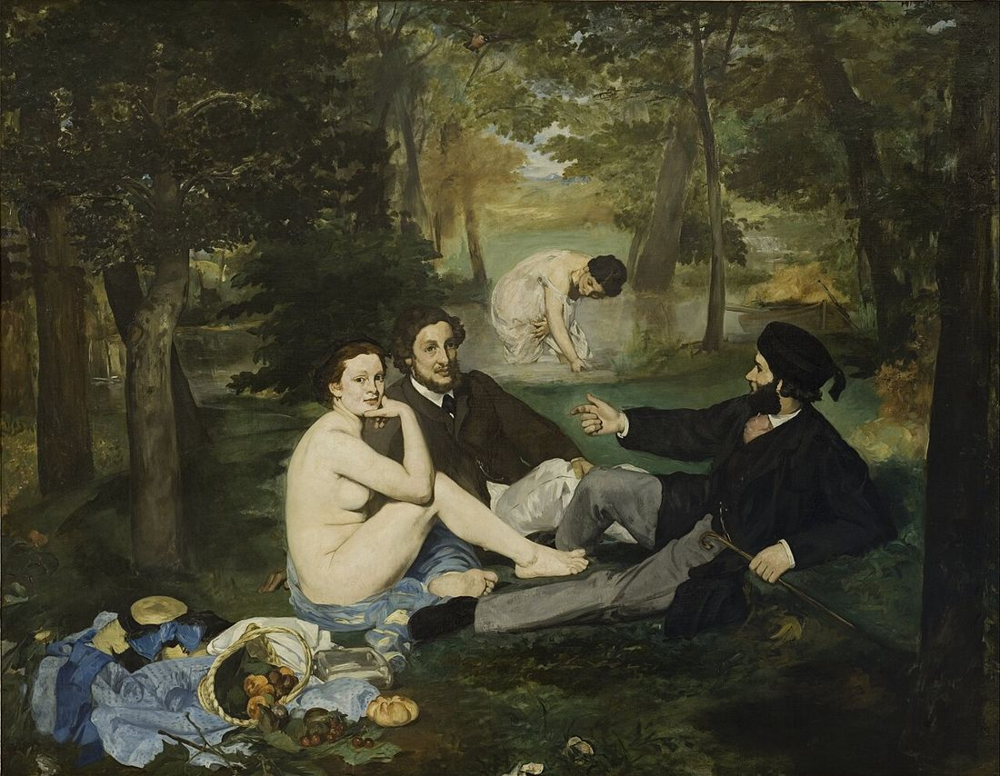
Édouard Manet, Le Déjeuner sur l'herbe, 1863 · Musée d'Orsay, Paris
Choisis une œuvre qui a pour toi une résonance particulière : un tableau, une sculpture, un roman, un film, une chanson ou un monument. Présente-la, recontextualise-la, explique l'écho qu'elle crée en toi et mets-la en dialogue avec un autre art. Environ 250 mots.
Choose a work that has a special resonance for you: a painting, a sculpture, a novel, a film, a song or a monument. Present it, put it back in context, explain the echo it creates in you and bring it into dialogue with another art form. About 250 words.
Pour trouver tes idées · to find your ideas
• Où et quand as-tu découvert cette œuvre ? Qu'as-tu ressenti au premier regard ?
Where and when did you discover this work? What did you feel at first sight?
• Dans quel contexte a-t-elle été créée : l'époque, la vie de l'artiste, l'histoire ?
In what context was it created: the period, the artist's life, history?
• Pourquoi te touche-t-elle encore aujourd'hui ? Est-ce une émotion, un souvenir, une idée ?
Why does it still move you today? Is it an emotion, a memory, an idea?
• Avec quelle autre œuvre pourrait-elle dialoguer : un poème, une musique, un film ?
Which other work could it be in dialogue with: a poem, a piece of music, a film?
Mots utiles · useful words
Organise ton texte · organise your text
1
Introduction : présente l'œuvre (titre, artiste, date, lieu) et annonce pourquoi tu l'as choisie.
Introduction: present the work (title, artist, date, place) and say why you chose it.
L'œuvre dont je voudrais parler est…
2
Premier paragraphe : recontextualise l'œuvre, le moment où elle a été créée.
First paragraph: put the work back in the moment it was created.
À l'époque où… a peint / écrit…, la France…
3
Deuxième paragraphe : sa résonance pour toi, et son dialogue avec un autre art.
Second paragraph: its resonance for you, and its dialogue with another art.
Ce qui me frappe, c'est… Elle fait écho à…
4
Conclusion : ce que cette œuvre t'a appris, et une ouverture.
Conclusion: what this work has taught you, and a wider thought.
Pour bien la comprendre, il faudrait que chacun…
Défi : utilise au moins une fois dont, où (pour le temps), bien entre l'auxiliaire et le participe passé, et il faudrait que + subjonctif.
Challenge: use dont, où (for time), bien between the auxiliary and the past participle, and il faudrait que + subjunctive at least once each.
0 mots · words✓ Enregistré automatiquement · saved automatically
Quand ton texte est prêt, touche ce bouton, puis colle le texte dans ton message à Irène.
When your text is ready, tap this button, then paste the text into your message to Irène.
9
RÉFLEXION · FACULTATIVE
Adopter ou acheter un chien ?
Adopting or buying a dog?
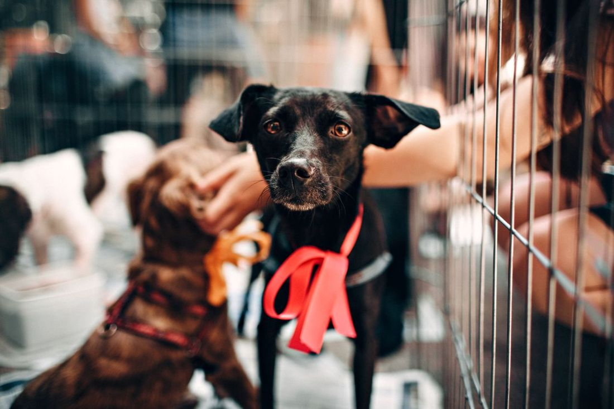
Au refuge, un chien attend sa nouvelle famille
En France, depuis le 1er janvier 2024, les animaleries n'ont plus le droit de vendre des chiens ni des chats. La loi veut limiter les achats impulsifs, réduire les abandons et encourager l'adoption dans les refuges. Pourtant, beaucoup de gens continuent de chercher un chien d'une race précise, parfois pour son apparence plus que pour son caractère.
In France, since 1 January 2024, pet shops have no longer been allowed to sell dogs or cats. The law aims to limit impulse buying, reduce abandonment and encourage adoption from shelters. Yet many people still look for a dog of a specific breed, sometimes for its looks more than its temperament.
Quelques questions · a few questions
• Faut-il toujours préférer l'adoption à l'achat ? Pourquoi ?
Should adoption always be preferred to buying? Why?
• Que pensez-vous de la mode de certaines races de chiens ?
What do you think of the fashion for certain dog breeds?
• Quelles responsabilités l'adoption d'un animal implique-t-elle ?
What responsibilities does adopting an animal involve?
• La loi suffit-elle à changer les comportements, ou faut-il aussi éduquer ?
Is the law enough to change behaviour, or is education also needed?
Écris quelques lignes si tu le souhaites : nous en parlerons au début de la prochaine leçon.
Write a few lines if you like: we will talk about it at the start of the next lesson.
0 mots · words✓ Enregistré automatiquement · saved automatically
Quand ton texte est prêt, touche ce bouton, puis colle le texte dans ton message à Irène.
When your text is ready, tap this button, then paste the text into your message to Irène.
À revoir · to review
Chaque erreur renvoie à la règle. · Each mistake links back to the rule.
💾 Ta progression est sauvegardée · your progress is saved
Tout est enregistré automatiquement dans ce document : tes réponses, ton score, tes traductions et tes textes. Tu peux fermer la page et la rouvrir avec le même lien quand tu veux, tu retrouveras tout exactement où tu l'as laissé. Pour continuer sur un autre appareil (téléphone, tablette, ordinateur), crée un lien de reprise et ouvre-le là-bas.
Everything is saved automatically in this document: your answers, your score, your translations and your texts. You can close the page and reopen it with the same link whenever you like, and everything will be exactly where you left it. To continue on another device (phone, tablet, computer), create a resume link and open it there.